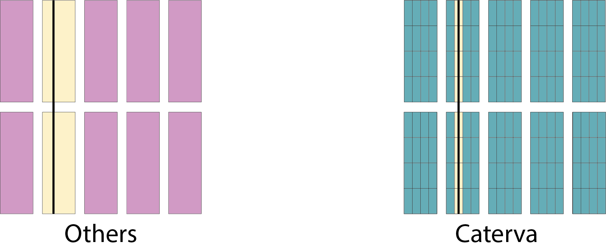
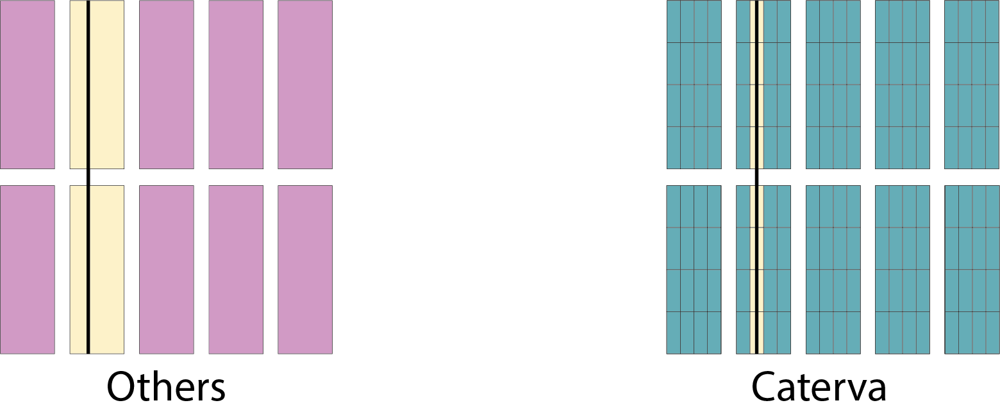
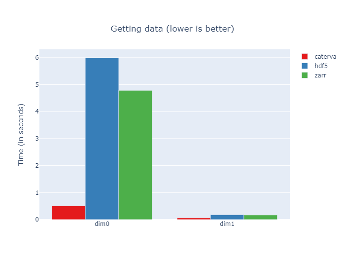
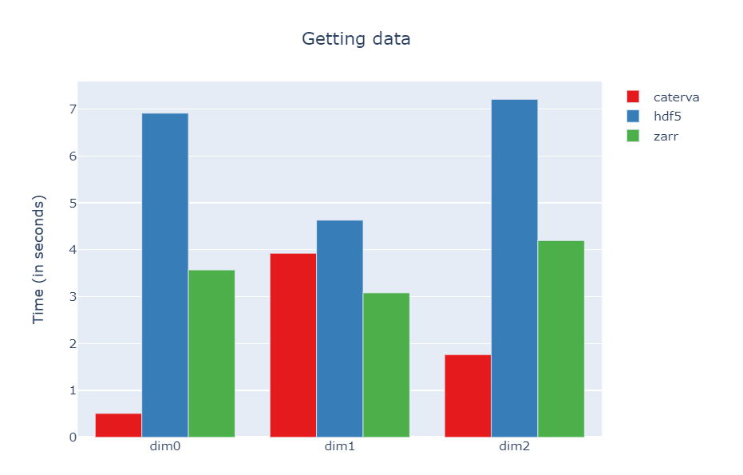
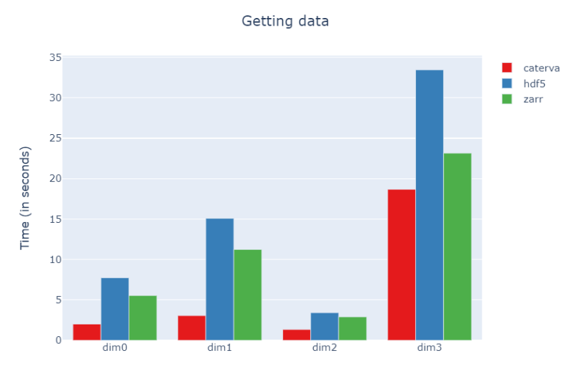

Caterva Slicing Performance: A Study
Caterva is a C library for handling multi-dimensional, chunked, compressed datasets in an easy and fast way. It is build on top of the C-Blosc2 library, leveraging all its avantages on modern CPUs.
Caterva can be used in a lot of different situations; however, where it really stands out is for extracting multidimensional slices of compressed datasets because, thanks to the double partitioning schema that it implements, the amount of data that has to be decompressed so as to get the slice is minimized, making data extraction faster (usually). In this installment, you will be offered a rational on how double partitioning works, together with some examples where it shines, and others where it is not that good.
Double partitioning

Some libraries like HDF5 or Zarr store data into multidimensional chunks. This makes slice extraction from compressed datasets more efficient than using monolithic compression, since only the chunks containing the interesting slice are decompressed instead of the entire array.
In addition, Caterva introduces a new level of partitioning. Within each chunk, the data is re-partitioned into smaller multidimensional sets called blocks. This generally improves the slice extraction, since this allows to decompress only the blocks containing the data in desired slice instead of the whole chunks.
Slice extraction with Caterva, HDF5 and Zarr
So as to see how the double partitioning performs with respect to a traditional single partition schema, we are going to compare the ability to extract multidimensional slices from compressed data of Caterva, HDF5 and Zarr. The examples below consist on extracting some hyper-planes from chunked arrays with different properties and seeing how Caterva performs compared with traditional libraries.
Note: So as to better compare apples with apples, all the benchmarks below have been run using Blosc (with LZ4 as the internal codec) as the compressor by default, with the shuffle filter. Even if Caterva uses the newest C-Blosc2 compressor, and HDF5 and Zarr uses its C-Blosc(1) antecessor, the performance of both libraries are very similar. Also, for easier interactivity, we have used the libraries via Python wrappers (python-caterva, h5py, Zarr).
2-dimensional array
This is a 2-dimensional array and has the following properties, designed to optimize slice extraction from the second dimension:
shape = (8_000, 8_000) chunkshape = (4_000, 100) blockshape = (500, 25)
Here we can see that the ratio between chunkshape and blockshape is 8x in dimension 0 and 4x in dimension 1.
 
Now we are going to extract some planes from the chunked arrays and will plot the performance. For dimension 0 we extract a hyperplane [i, :], and for dimension 1, [:, i], where i is a random integer.
Here we see that the slicing times are similar in the dimension 1. However, Caterva performs better in the dimension 0. This is because with double partitioning you only have to decompress the blocks containing the slice instead of the whole chunk.
In fact, Caterva is around 12x faster than HDF5 and 9x faster than Zarr for slicing the dimension 0, which makes sense since Caterva decompresses 8x less data. For the dimension 1, Caterva is approximately 3x faster than HDF5 and Zarr; in this case Caterva has to decompress 4x less data.
That is, the difference in slice extraction speed depends largely on the ratio between the chunk size and the block size. Therefore, for slices where the chunks that contain the slice also have many items that do not belong to it, the existence of blocks (i.e. the second partition) allows to significantly reduce the amount of data to decompress.
Overhead of the second partition
So as to better assess the possible performance cost of the second partition, let's analyze a new case of a 3-dimensional array with the following parameters:
shape = (800, 600, 300) chunkshape = (200, 100, 80) blockshape = (20, 100, 10)
So, in the dimensions 0 and 2 the difference between shape and chunkshape is not too big whereas the difference between chunkshape and blockshape is remarkable.
However, for the dimension 1, there is not a difference at all between chunkshape and blockshape. This means that in dim 1 the Caterva machinery will make extra work because of the double partitioning, but it will not get any advantage of it since the block size is going to be equal to the chunk size. This a perfect scenario for measuring the overhead of the second partition.
The slices to extract will be [i, :, :], [:, i, :] or [:, :, i]. Let's see the execution times for slicing these planes:
As we can see, the performance in dim 1 is around the same order than HDF5 and Zarr (Zarr being a bit faster actually), but difference is not large, so that means that the overhead introduced purely by the second partition is not that important. However, in the other dimensions Caterva still outperforms (by far) Zarr and HDF5. This is because the two level partitioning works as intended here.
A last hyper-slicing example
Let's see a final example showing the double partitioning working on a wide range of dimensions. In this case we choose a 4-dimensional array with the following parameters:
shape = (400, 80, 100, 50) chunkshape = (100, 40, 10, 50) blockshape = (30, 5, 2, 10)
Here the last dimension (3) is not optimized for getting hyper-slices, specially in containers with just single partitioning (Zarr and HDF5). However, Caterva should still perform well in this situation because of the double partitioning.
The slices we are going to extract will be [i, :, :, :], [:, i, :, :], [:, :, i, :] or [:, :, :, i]. Let's see the execution times for slicing these hyperplanes:
As we can see, in this case Caterva outperforms Zarr and HDF5 in all dimensions. However, the advantage is not that important for the last dimension. The reason is that in this last dimension Caterva has a noticeably lower ratio between its shape and blockshape than in the other dimensions.
Final thoughts
We have seen that adding a second partition is beneficial for improving slicing performance in general. Of course, there are some situations where the overhead of the second partition can be noticeable, but the good news is that such an overhead does not get too large when compared with containers with only one level of partitioning.
Finally, we can conclude that Caterva usually obtains better results due to its second partitioning, but when it shines the most is when the two levels of partitioning are well balanced among them and also with respect to the shape of the container.
As always, there is no replacement for experimentation so, in case you want to try Caterva by yourself (and you should if you really care about this problem), you can use our Caterva poster; it is based on a Jupyter notebook that you can adapt to your own scenarios.